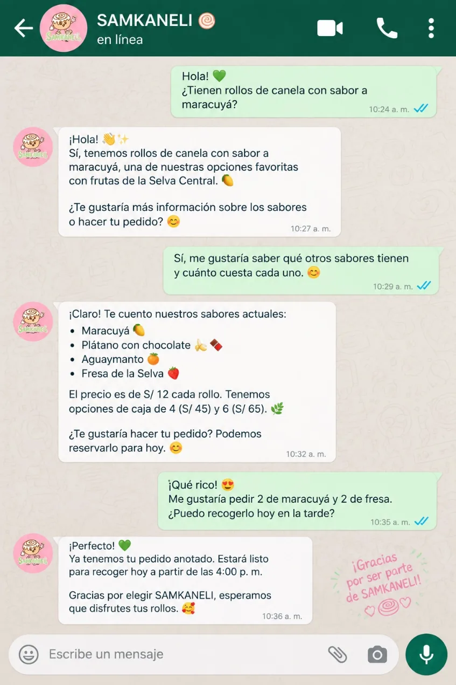

Fortalezas identificadas
- Identidad visual fácil de reconocer: mascota de rollo de canela y paleta pastel.
- Imagen coherente en empaques, uniformes, stickers y publicidad (según la ficha).
- Diferenciador claro: sabores de frutas de la región.
Inicio › La marca › Imagen institucional
Imagen institucional
La diferencia entre la identidad que SAMKANELI quiere proyectar y la percepción que desea generar en sus clientes.

Mockup conceptual Imagen conceptual, no fotografía real.
Tres etapas
Rollos de canela artesanales con sabores de la Selva Central. Una marca dulce, amigable, acogedora, creativa, cercana y confiable.
Producto bien presentado, atención cordial, identidad visual coherente y mensajes claros.
Como una marca dulce, cercana, confiable y con identidad regional.
Percepción deseada, no comprobada. No se hizo ninguna encuesta ni se recogieron testimonios. La ficha afirma cómo perciben los clientes a la marca, pero sin un estudio que lo respalde; aquí se trata como el objetivo a lograr.
Diagnóstico
Tomado de la ficha institucional.
Narrativa
Selecciona una etapa para ver sus ejemplos.

Producto, personalidad y origen regional.
Ejemplos de aplicación: Rollo con frutas de la selva, mascota y paleta crema, rosa, marrón y verde.
Propuesta visual
Elaboramos y presentamos rollos con cuidado.
Ejemplos de aplicación: Fotografía del proceso, textura de masa y canela, empaques ordenados.
Propuesta visual
Empaque, publicaciones, uniforme y punto de venta.
Ejemplos de aplicación: Caja, bolsa, etiqueta, uniforme y publicaciones con la misma línea gráfica.
Propuesta visual
Dulzura, calidez y confianza.
Ejemplos de aplicación: Saludo personalizado, mensajes claros y trato amable.
Propuesta visualLa mascota, los colores y el sabor de la selva.
Ejemplos de aplicación: Mascota, paleta, eslogan y un sabor distinto a todo lo demás.
Propuesta visualMatriz de percepción
Toca un atributo para ver cómo se traduce en algo concreto.
Mostrar el producto con fotografías cuidadas y detalles de su textura.
Fotografía gastronómica, catálogo, publicaciones y empaques.
Que la presentación despierte interés y antojo.

Utilizar colores cálidos, formas suaves y mensajes cercanos.
Paleta crema, rosa y marrón; mensajes de bienvenida.
Que la marca resulte cercana y agradable.

Presentar combinaciones inspiradas en frutas de la Selva Central.
Etiquetas de sabor, carruseles de productos y campañas visuales.
Que la propuesta tenga una personalidad reconocible.

Comunicar con claridad la información disponible y cuidar la presentación.
Información de pedidos, respuestas claras y materiales coherentes.
Que la marca transmita seriedad y confianza.

Integrar las frutas y referencias de la región de manera respetuosa.
Fotografía de ingredientes, ilustraciones botánicas y narrativa de sabores.
Que se comprenda el vínculo con la Selva Central.

Propuesta Matriz estratégica propuesta. Las acciones son recomendaciones mientras no se confirme su implementación.
Así construimos la imagen de SAMKANELI
Cinco atributos, cada uno con su ejemplo visual.
Presentar una marca agradable, cálida y ligada a momentos especiales.

Fotografía apetitosa de un rollo, fondo crema, detalles rosa pastel y una frase breve.
Que el producto se vea apetitoso y la marca resulte agradable.
Comunicar profesionalismo y responsabilidad.

Empaque ordenado, etiqueta legible, identidad consistente e información clara para pedir.
Que el cliente entienda la información y perciba cuidado.
Destacar las combinaciones de canela y sabores de la Selva Central.

Colección de sabores, etiquetas diferenciadas y presentación propia para cada variedad.
Que la propuesta se sienta original y despierte curiosidad.
Hacer que la marca se sienta amigable y accesible.

Mensajes naturales, saludo personalizado, agradecimiento y piezas con lenguaje sencillo.
Que la interacción resulte agradable y comprensible.
Relacionar el producto con los sabores de la Selva Central.
.png)
Fotografías de ingredientes, composiciones botánicas y descripciones breves.
Que el vínculo se entienda sin explicaciones largas.
Mockup conceptual Las imágenes son de referencia o mockups conceptuales.
Escenarios
Mockups y referencias: no son fotografías de entregas reales.


Recorrido del cliente
Cinco etapas, cada una con su aplicación.
Ve una publicación, una fotografía o una recomendación.
Aplicaciones: Contenido visual, fotografía gastronómica, anuncio de producto y perfil social propuesto.
Percepción deseada: Curiosidad y ganas de conocer la marca.

Explora los sabores, mira las fotos y busca información.
Aplicaciones: Catálogo visual, carrusel de sabores, descripciones claras e ingredientes.
Percepción deseada: Interés y comprensión de la propuesta.
Necesita saber qué hay disponible y cómo pedir.
Aplicaciones: Canal de contacto, mensajes claros, información confirmada y botones funcionales.
Percepción deseada: Facilidad para consultar y confianza en la comunicación.

Recibe el producto y observa su presentación.
Aplicaciones: Empaque, etiqueta, presentación del producto y tarjeta de agradecimiento.
Percepción deseada: Una experiencia cuidada y agradable.
Vuelve a encontrarse con la marca o comparte su experiencia.
Aplicaciones: Contenido de marca, campañas de nuevos sabores y mensajes de agradecimiento.
Percepción deseada: Reconocimiento y disposición a volver a considerar la marca.
Propuesta Recorrido deseado; no describe un proceso comercial ya implementado ni mide conversiones.
Evaluar
Para saber si las aplicaciones comunican lo que se desea, la marca podría probar estos métodos sencillos:
Propuesta Herramientas para una evaluación futura. No existen resultados de encuestas.